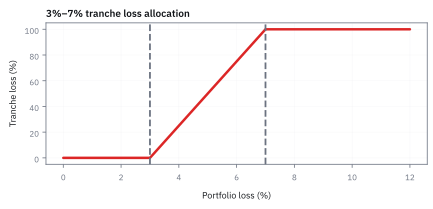
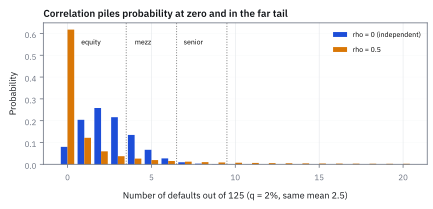
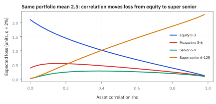
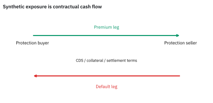

22.4 CDOs, Synthetic CDOs, and the Gaussian Copula
จาก portfolio loss ไป tranche loss: correlation เป็น input ที่แพงกว่าที่ดู
พอร์ต Collateralized Debt Obligation (CDO) ขนาด \$100 ล้าน มีชั้น mezzanine รับขาดทุนช่วง 3%–7% (\$4 ล้าน) หากพอร์ตเสียหายรวม \$5 ล้าน ชั้นนี้จะขาดทุนกี่ดอลลาร์?
เฉลย: ขาดทุน \$2 ล้าน (คิดเป็น 50% ของชั้น) เพราะผลขาดทุน \$3 ล้าน แรกถูก equity tranche ด้านล่างดูดซับไปก่อน ส่วน senior tranche เหนือ 7% ไม่ได้รับความเสียหายเลย
ศัพท์ของ structured credit
- collateralized debt obligation (CDO)
- โครงสร้างที่แบ่ง credit loss ของ portfolio เป็น tranches ใช้ให้ investor เลือกระดับ subordination
- present value (PV)
- มูลค่ากระแสเงินสดในวันนี้หลัง discount ตาม curve ใช้เทียบ premium leg กับ expected default leg บนหน่วย USD เดียวกัน
- cash CDO
- CDO ที่ถือ bonds หรือ loans จริง ใช้รับ coupon และ credit loss ของ collateral
- synthetic CDO
- CDO ที่อ้างอิง credit risk ผ่าน credit default swaps (CDS) ใช้สร้าง exposure โดยไม่ซื้อ bond จริง
- credit default swap (CDS)
- สัญญา derivative ที่ protection buyer จ่ายค่าพรีเมียมเพื่อแลกกับการชดเชยเมื่อลูกหนี้ผิดนัดชำระหนี้ ใช้สร้างความคุ้มครองความเสี่ยงเครดิต
- attachment point
- ระดับ portfolio loss ที่ tranche เริ่มรับ loss ใช้กำหนด subordination ด้านล่าง
- detachment point
- ระดับ portfolio loss ที่ tranche ถูก write down เต็ม ใช้กำหนดความหนาของ tranche
- equity tranche
- ชั้นที่รับผลขาดทุนก้อนแรกสุดของพอร์ตตั้งแต่ 0% ถึงจุด attachment ใช้ปกป้องชั้นที่อยู่สูงกว่า
- mezzanine tranche
- ชั้นที่รับผลขาดทุนต่อจาก equity tranche ก่อนจะถึงชั้น senior ใช้ให้ผลตอบแทนปานกลางแลกกับการรับความเสี่ยงชั้นกลาง
- senior tranche
- ชั้นที่อยู่บนสุดของโครงสร้างซึ่งจะเริ่มเสียหายเมื่อผลขาดทุนทะลุ detachment ของชั้นล่างทั้งหมด ใช้ให้นักลงทุนที่เน้นความปลอดภัยสูงสุด
- premium leg
- กระแสเงินที่ protection buyer จ่ายตาม outstanding tranche notional ใช้เป็นรายได้ของ protection seller
- default leg
- กระแส loss payment ที่ protection seller จ่ายเมื่อ portfolio loss กิน tranche ใช้เป็นภาระของ tranche
- Gaussian copula
- model ที่เชื่อม marginal default probabilities ด้วย correlated Gaussian latent variables ใช้จำลอง joint defaults
- tail dependence
- แนวโน้มที่ extreme defaults เกิดร่วมกันมากกว่าที่ model อนุมานจาก correlation กลาง ๆ ใช้เป็นจุดตรวจ model risk
- Credit Default Swap Index (CDX)
- ดัชนีที่รวม CDS ของบริษัทหลายสิบรายเป็นสัญญาเดียว ใช้ซื้อขายความเสี่ยงเครดิตทั้งกลุ่มและใช้ hedge tranche
สัญกรณ์และหน่วย
| สัญลักษณ์ | ความหมาย | หน่วย |
|---|---|---|
| $L_T$ | cumulative portfolio loss fraction ณ horizon $T$ | ไม่มีหน่วย |
| $A,D$ | attachment และ detachment fractions | ไม่มีหน่วย |
| $N$ | portfolio notional หรือจำนวนสัญญาในพอร์ต | USD หรือสัญญา |
| $TL_T$ | tranche loss fraction | ไม่มีหน่วย |
| $p_i$ | marginal default probability ของ name $i$ ถึง $T$ | ไม่มีหน่วย |
| $R_i$ | recovery rate ของ name $i$ | ไม่มีหน่วย |
| $\rho$ | ระดับที่มูลค่าสินทรัพย์ของลูกหนี้ทุกรายขยับตามปัจจัยร่วมตัวเดียวกัน คือ asset correlation ใน one-factor Gaussian copula | ไม่มีหน่วย |
| $M$ | ปัจจัยความเสี่ยงร่วมระดับมหภาค (systematic market factor) | ไม่มีหน่วย |
| $\epsilon_i$ | ปัจจัยความเสี่ยงเฉพาะตัวของลูกหนี้แต่ละราย (idiosyncratic factor) | ไม่มีหน่วย |
| $s$ | annual premium spread ของ tranche | ต่อปี |
| $q$ | โอกาสเจ๊งใน 1 ปีของ bond แต่ละตัวในตัวอย่าง 125 ตัว | ไม่มีหน่วย |
| $L_{\rm eq},L_{\rm mz},L_{\rm sr},L_{\rm ss}$ | ขาดทุนของ equity 0–3, mezzanine 3–6, senior 6–9 และ super senior 6–125 หน่วย | หน่วยของ bond |
| $\pi_i(k)$ | โอกาสที่ใน $i$ รายแรกเจ๊งพอดี $k$ ราย | ไม่มีหน่วย |
| $A_{\rm tr},\ u_0^*$ | annuity ของ tranche และเงินล่วงหน้าที่ทำให้สัญญายุติธรรม | ปี และสัดส่วนของ notional |
ที่มาที่ไป: บทความปี 2000 ที่ต่อมาถูกเรียกว่าสูตรที่ทำให้วอลล์สตรีทล่ม
ปัญหาที่ค้างอยู่ในการตั้งราคาตราสารที่อ้างอิงกลุ่มสินเชื่อคือ ต้องรู้ว่าลูกหนี้หลายรายจะเจ๊งพร้อมกันแค่ไหน ซึ่งข้อมูลย้อนหลังแทบไม่มีเลยเพราะเป็นเหตุการณ์หายาก
David Li เสนอทางออกในปี 2000 โดยยืมเครื่องมือจากวิชาสถิติมาเชื่อมความเสี่ยงของลูกหนี้แต่ละรายเข้าด้วยกัน และปรับค่าให้ตรงกับราคาที่ตลาดซื้อขายแทนที่จะประมาณจากสถิติ
ตลาดยอมรับอย่างรวดเร็วเพราะมันคำนวณเร็วและให้คำตอบเดียวที่ทุกคนใช้ร่วมกันได้
แต่เครื่องมือที่เลือกมีสมบัติข้อหนึ่งที่ไม่มีใครให้น้ำหนักพอ คือ Gaussian copula ที่ correlation ต่ำกว่าหนึ่งมี asymptotic tail dependence เป็นศูนย์ แต่ยังให้โอกาสผิดนัดพร้อมกันที่ threshold ใด ๆ ได้ ซึ่งเป็นข้อสมมติที่ปี 2008 พิสูจน์ว่าผิดอย่างที่แพงที่สุดในประวัติศาสตร์
กำเนิด CDO: การหลบเกณฑ์เงินกองทุน สู่การประเมินราคาด้วย Gaussian copula
CDO เกิดขึ้นครั้งแรกในตลาดการเงินช่วงกลางทศวรรษ 1990 โดยมีแรงผลักดันหลักมาจาก regulatory arbitrage ภายใต้ข้อตกลง Basel I ซึ่งบังคับให้ธนาคารพาณิชย์ต้องกันเงินกองทุน 8% สำหรับสินเชื่อธุรกิจทุกประเภท ไม่ว่าลูกหนี้จะมีอันดับความน่าเชื่อถือสูงเพียงใด ทำให้ธนาคารมีต้นทุนเงินทุนจมมหาศาล
ทางออกของธนาคารคือการรวมสินเชื่อเข้าเป็น pool แล้วแบ่งสิทธิ์การรับกระแสเงินสดออกเป็น tranche ตามลำดับชั้น (cash CDO) เช่น โครงสร้าง CDO ยุคแรกของ J.P. Morgan ในปี 1997 ธนาคารขาย senior tranche ที่มีความเสี่ยงต่ำให้แก่นักลงทุนสถาบัน แล้วถือ equity tranche ไว้เอง ทำให้ลดเงินกองทุนที่ต้องกันสำรองลงได้มากกว่า 80% แต่ยังคงเก็บผลตอบแทนส่วนใหญ่ไว้ได้
ต่อมาในปลายทศวรรษ 1990 ตลาดต้องการซื้อขายความเสี่ยงเฉพาะชั้นโดยไม่ต้องระดมทุนซื้อสินทรัพย์จริง จึงเกิด synthetic CDO ที่อ้างอิง credit default swap (CDS) แต่ปัญหาใหญ่ในตอนนั้นคือไม่มีวิธีคำนวณความเสี่ยงของการผิดนัดพร้อมกันที่รวดเร็ว จนกระทั่ง David X. Li เสนอ Gaussian copula ในปี 2000 ซึ่งเปลี่ยนการคำนวณหลายมิติที่ซับซ้อนให้กลายเป็นการแทนค่าที่เสร็จในเสี้ยววินาที
ทำไม tranche ต้องเริ่มจาก loss function
ลองนึกถึงถังรับความเสียหายสามใบก่อน ถังแรกจ่ายก่อน ถังกลางเริ่มจ่ายเมื่อถังแรกเต็ม และถังสุดท้ายจ่ายเมื่อความเสียหายหนักจริง ๆ นี่คือสิ่งที่ tranche ทำกับ loss ของ portfolio
เริ่มคำนวณจากเงินต้นที่ผิดนัด คูณส่วนที่กู้คืนไม่ได้ แล้วเทียบกับเงินต้นทั้งก้อน ผลลัพธ์คือ portfolio loss fraction
Equity tranche รับ loss แรก, mezzanine รับต่อจาก equity และ senior รับท้ายสุด
เพราะ senior รออยู่ท้ายแถว จึงดู expected portfolio loss ค่าเดียวไม่ได้ ค่าเฉลี่ยเท่ากันอาจมาจาก loss เล็ก ๆ ทุกครั้ง หรือจากเหตุการณ์หางที่ทะลุ attachment บ่อย ผลต่อ senior ต่างกันมาก
Synthetic CDO ไม่ต้องซื้อ bond จริง แต่ใช้ CDS แทน.
protection seller รับ premium บน tranche notional ที่ยังเหลือ และจ่ายเมื่อ loss ถูกจัดเข้าชั้นนั้น. counterparty, collateral, settlement lag และกติกา CDS คือความเสี่ยงเพิ่มที่ต้องตรวจพร้อม credit model ไม่ใช่หมายเหตุท้ายหน้า
ขั้นที่ 1 — นิยามของขาดทุนรวมของกองสินเชื่อ
บรรทัดนี้เป็น นิยาม ของสิ่งที่เราจะติดตาม ไม่ใช่ผลที่พิสูจน์ อ่านทีละก้อน: ตัวบ่งชี้เป็นหนึ่งเฉพาะรายที่เจ๊งภายในเวลาที่สนใจ ส่วนที่คูณอยู่คือสัดส่วนที่หายไปจริงของรายนั้น คือหนึ่งลบสัดส่วนที่ได้คืน คูณด้วยขนาดของรายนั้นในกอง แล้วบวกทุกราย หารด้วยขนาดกองเพื่อให้เป็นสัดส่วน จุดสำคัญคือค่านี้สุ่ม เพราะไม่รู้ว่าใครจะเจ๊งบ้าง และการกระจายของมันคือทั้งหมดที่หัวข้อนี้สนใจ
ดูบริษัทแต่ละราย $i$: ใส่ notional $w_i$, recovery $R_i$ และดูว่า default ก่อนเวลา $T$ หรือไม่
ถ้า default indicator เป็นหนึ่ง เรานับส่วนที่กู้คืนไม่ได้ $1-R_i$ ของ notional นั้น; ถ้ายังไม่ default พจน์นั้นเป็นศูนย์ รวมทุกบริษัทแล้วหารด้วย notional รวม $N$.
ผลลัพธ์ $L_T$ คือสัดส่วน loss ของทั้ง portfolio ไม่ใช่ USD ของ tranche ใด tranche หนึ่ง
ขั้นที่ 2 — map portfolio loss เป็น tranche loss
ขาดทุนของกองแปลงเป็นขาดทุนของชั้นด้วยกติกาที่ไล่ได้ทีละกรณี สมการนี้แสดงว่าตัวเลือกสองชั้นที่ซ้อนกันในสูตร ไม่ใช่การเขียนให้ดูยาก มันคือสามกรณีที่รวบไว้ในบรรทัดเดียว
$A$ คือระดับที่ชั้นนี้เริ่มเจ็บ และ $D$ คือระดับที่มันหมดตัว
สามกรณีในวงเล็บปีกกาอ่านว่า: ขาดทุนรวมยังไม่ถึงระดับล่าง ชั้นนี้ไม่เจ็บเลย อยู่ระหว่างสองระดับ เจ็บเท่าส่วนที่เกินระดับล่าง และเกินระดับบน เจ็บเต็มความหนาของชั้น
บรรทัดถัดมารวบสามกรณีเป็นบรรทัดเดียว ตัวเลือกค่ามากกว่ากับศูนย์จัดการกรณีแรก ส่วนตัวเลือกค่าน้อยกว่ากับความหนาจัดการกรณีที่สาม
บรรทัดสุดท้ายหารด้วยความหนา เพื่อให้ผลอยู่ระหว่างศูนย์กับหนึ่ง จะได้เทียบข้ามชั้นที่หนาไม่เท่ากันได้
อ่านรูป: นี่คือ payoff ของการขายชุดของ option ซึ่งเป็นเหตุผลที่ชั้นล่างไวต่อความเกาะกันมาก
คำตอบ — การจัดสรรผลขาดทุนของ tranche 3%–7% เมื่อพอร์ตเสียหาย \$5 ล้าน
คำถาม: พอร์ต \$100 ล้าน เสียหาย \$5 ล้าน หรือ 5% ชั้น mezzanine 3%–7% ขนาด \$4 ล้าน จะขาดทุนกี่ดอลลาร์ และชั้นอื่นเสียเท่าไร?
ของที่มี: ขั้นที่ 1 ถึง 2
1. equity 0%–3% รับ \$3 ล้าน แรกจนเต็มชั้น
2 ส่วนที่เกินคือ \$5 ล้าน − \$3 ล้าน = \$2 ล้าน ไหลเข้า mezzanine
3. mezzanine เสีย \$2 ล้าน หรือ 50% ของชั้น ส่วน senior เหนือ 7% ไม่เสียเลย
ตรวจเองใน 10 วินาที: 3 + 2 + 0 = 5 เท่ากับขาดทุนของทั้งพอร์ต
แปลว่าอะไร: ชั้นเดียวกันอาจไม่เจ็บเลยหรือหมดทั้งชั้น ขึ้นกับว่าขาดทุนรวมไปถึงระดับไหน ความเสี่ยงของ tranche จึงอยู่ที่หางของการกระจายตัว ไม่ใช่ค่าเฉลี่ย
โค้ดตรวจสอบผลขาดทุนของ tranche และผลของความสัมพันธ์
import numpy as np
def tranche_loss(portfolio_loss, attachment, detachment):
thick = detachment - attachment
dollar_loss = max(min(portfolio_loss - attachment, thick), 0.0)
fraction = dollar_loss / thick
return dollar_loss, fraction
# 1. ตรวจสอบตัวอย่างคำตอบ: พอร์ต USD 100M ขาดทุน USD 5M
loss = 5.0 # USD M
att, det = 3.0, 7.0 # USD M (3% - 7%)
t_loss, t_frac = tranche_loss(loss, att, det)
assert np.isclose(t_loss, 2.0), f"Expected 2.0M, got {t_loss}"
assert np.isclose(t_frac, 0.50), f"Expected 50%, got {t_frac}"
# Equity tranche (0 - 3M)
eq_loss, eq_frac = tranche_loss(loss, 0.0, 3.0)
assert np.isclose(eq_loss, 3.0), f"Equity loss should be 3.0M, got {eq_loss}"
assert np.isclose(eq_frac, 1.00), "Equity should be 100% wiped out"
# Senior tranche (7 - 100M)
sn_loss, sn_frac = tranche_loss(loss, 7.0, 100.0)
assert np.isclose(sn_loss, 0.0), f"Senior loss should be 0.0, got {sn_loss}"
# กฎการอนุรักษ์ผลขาดทุน: รวมทุก tranche ต้องเท่ากับพอร์ต
assert np.isclose(eq_loss + t_loss + sn_loss, loss)
# 2. ตัวอย่างลูกหนี้ 2 ราย (รายละ USD 50, p=10%, R=0, senior รับส่วนเกิน 50)
# กรณีอิสระต่อกัน (Independent):
p_ind = [0.81, 0.18, 0.01] # L = 0, 50, 100
exp_loss_ind = 0.18 * 50.0 + 0.01 * 100.0
sn_exp_ind = 0.01 * 50.0
# กรณีผูกกันสมบูรณ์ (Together):
p_cor = [0.90, 0.0, 0.10] # L = 0, 50, 100
exp_loss_cor = 0.10 * 100.0
sn_exp_cor = 0.10 * 50.0
assert np.isclose(exp_loss_ind, 10.0)
assert np.isclose(exp_loss_cor, 10.0)
assert np.isclose(sn_exp_ind, 0.50)
assert np.isclose(sn_exp_cor, 5.00)
print("All structured credit assertions passed successfully!")
ตัวอย่าง 125 bond และลูกหนี้ 20 รายของ PSet4
import numpy as np
from scipy.stats import norm, binom
N, lv = 125, np.arange(126)
m = np.linspace(-9, 9, 6001); w = norm.pdf(m); w = w / w.sum()
def dist(q, rho):
if rho == 0:
return binom.pmf(lv, N, q)
qm = np.clip(norm.cdf((norm.ppf(q) - np.sqrt(rho) * m) / np.sqrt(1 - rho)), 1e-15, 1 - 1e-15)
return (binom.pmf(lv[:, None], N, qm[None, :]) * w).sum(1)
def el(p, a, b):
return (np.clip(lv - a, 0, b - a) * p).sum()
p0, p5 = dist(0.02, 0.0), dist(0.02, 0.5)
assert [round(el(p0, a, b), 3) for a, b in ((0, 3), (3, 6), (6, 9))] == [2.093, 0.388, 0.018]
assert [round(el(p5, a, b), 3) for a, b in ((0, 3), (3, 6), (6, 125))] == [0.844, 0.42, 1.235]
assert abs(el(p5, 0, 125) - 2.5) < 1e-9 and round(p5[0], 3) == 0.618 and round(p5[9:].sum(), 4) == 0.0811
pi = [0.20, 0.20, 0.06, 0.30, 0.40, 0.65, 0.30, 0.23, 0.02, 0.12,
0.134, 0.21, 0.08, 0.10, 0.10, 0.02, 0.30, 0.015, 0.20, 0.03]
d = np.zeros(21); d[0] = 1.0
for q in pi:
d[1:] = d[1:] * (1 - q) + d[:-1] * q
d[0] = d[0] * (1 - q)
k = np.arange(21)
assert round(sum(pi), 3) == 3.669 and abs((k * d).sum() - 3.669) < 1e-12
assert round(d[5:].sum(), 4) == 0.2876 and round((k**2 * d).sum() - 3.669**2, 3) == 2.535ชุดแรกคือขั้นที่ 5 ชุดหลังคือขั้นที่ 6 ค่าเฉลี่ยของ recursion ต้องเท่ากับผลรวมของโอกาสเจ๊งพอดี
แล้วเอาไปใช้ทำอะไรได้จริงบ้าง
การตั้งราคาตราสารที่อ้างอิงกลุ่มสินเชื่อ ต้องใช้เครื่องมือที่จำลองการเจ๊งพร้อมกัน
ใช้ตั้งราคาชั้นต่าง ๆ ของตราสารที่อ้างอิงพอร์ตสินเชื่อ
ใช้เข้าใจว่าทำไมชั้นบนกับชั้นล่างถึงไวต่อสมมติฐานเรื่องความสัมพันธ์คนละทาง
ใช้เป็นกรณีศึกษาว่าแบบจำลองที่สวยงามทำให้เกิดความเสียหายมหาศาลได้อย่างไร
Figure 22.4a — attachment แปลง loss ของ portfolio เป็น loss ของ tranche

เส้นหักมุมของ tranche 3%–7% เริ่มเสียที่ 3% และเสียเต็มที่ที่ 7% รูปนี้ควรอยู่ในทุก model review เพราะช่วยจับ error หน่วย percent versus fraction ได้เร็วมาก
ค่าเฉลี่ยเท่ากัน แต่ senior เสียต่างกัน
$p_{\rm ind}$ และ $p_{\rm tog}$ คือโอกาสที่ขาดทุน 0, 50 และ \$100 ใช้ลูกหนี้สองราย รายละ \$50 โอกาสผิดนัดรายละ 10% และไม่ได้เงินคืน หากเป็นอิสระ โอกาสผิดนัดพร้อมกันคือ 0.1 คูณ 0.1 เท่ากับ 1% หากผูกกันสมบูรณ์ เหตุของรายแรกคือเหตุของรายที่สองด้วย จึงผิดนัดพร้อมกัน 10%
ทั้งสองโลกมี expected portfolio loss \$10 เท่ากัน แต่ tranche ที่รับเฉพาะ loss เกิน \$50 มี expected loss 0.50 กับ \$5 ต่างกันสิบเท่า เราจึงต้องรู้การเกิดร่วมกันเพื่อ pricing ไม่ใช่เพียงโอกาสรายชื่อ
ขั้นที่ 3 — นิยามของแบบจำลองที่ผูกการเจ๊งของทุกรายเข้าด้วยกัน
สองก้อนนี้เป็น นิยาม ของแบบจำลองที่เราเลือก ไม่ใช่ความจริงที่พิสูจน์ได้ บรรทัดแรกสร้างตัวแปรของแต่ละรายจากสองส่วน คือแรงร่วมที่ทุกรายแบ่งกัน กับแรงเฉพาะตัว น้ำหนักสองตัวถูกเลือกให้ผลรวมมี variance เป็นหนึ่ง ด้วยเหตุผลและวิธีตรวจเดียวกับหัวข้อ 13.7 บรรทัดที่สองผูกตัวแปรนั้นกับการเจ๊ง โดยตั้งเกณฑ์ให้โอกาสเจ๊งตรงกับที่ตลาดบอก ข้อจำกัดที่ต้องรู้: แบบจำลองนี้ให้ค่าการพังพร้อมกันที่ปลายหางเป็นศูนย์ ซึ่งหัวข้อ 6.6 เตือนไว้แล้ว และเป็นสาเหตุที่มันประเมินความเสี่ยงต่ำไปในปี 2008
ให้ $M$ เป็นแรงร่วมของตลาด และ $\epsilon_i$ เป็นแรงเฉพาะบริษัท $\rho$ บอกว่าน้ำหนักของแรงร่วมมีมากแค่ไหน.
รวมสองแรงเป็นคะแนนซ่อน $X_i$ ถ้าคะแนนต่ำกว่า threshold ที่สร้างจาก default probability $p_i$, บริษัท $i$ default ภายในเวลา $T$.
ผลลัพธ์คือวิธีจำลองว่า default มาเป็นกลุ่มได้อย่างไร $\rho$ สูงขึ้นไม่ได้แปลว่า expected loss ต้องสูงขึ้นเสมอ แต่ย้ายโอกาสไปที่การเกิดพร้อมกันมากขึ้น.
ที่มาของตัวคูณถ่วงน้ำหนักและจุดตัดการผิดนัด
เราเริ่มจากสมมติฐานที่เรียบง่ายที่สุด: กำหนดให้แรงขับเคลื่อนระดับตลาด $M$ และแรงเฉพาะตัว $\epsilon_i$ เป็น random variable ปกติมาตรฐานที่กระจายตัวแบบ i.i.d โดยมี correlation ร่วมกันเป็น $\rho$ เมื่อสร้างคะแนนรวม $X_i$ เราต้องแน่ใจว่าตัวแปรใหม่ยังคงมี standard deviation เท่ากับหนึ่ง และจุดตัดการผิดนัดสอดคล้องกับ probability of default ของลูกหนี้แต่ละราย
ตัวคูณ $\sqrt{\rho}$ และ $\sqrt{1-\rho}$ ถูกออกแบบมาเพื่อให้ variance รวมของคะแนน $X_i$ รวมกันได้ 1 พอดี ผลบวกของกำลังสองของน้ำหนักทั้งสองตัดกันเหลือหนึ่ง ทำให้คะแนนรวมยังคงเป็น standard normal
เมื่อคูณคู่ข้าม $X_i$ กับ $X_j$ พจน์ที่ติด noise เฉพาะตัวจะให้ expected value เป็นศูนย์เพราะ independence ระหว่างตัวแปร เหลือเพียงพจน์ร่วม $\rho\mathrm{E}[M^2]=\rho$ ซึ่งตรงกับ correlation ที่ต้องการ
บรรทัดสุดท้ายหาจุดตัด $c_i$ โดยอาศัยนิยามของ cumulative distribution function: พื้นที่ใต้กราฟ standard normal ทางซ้ายของ $c_i$ ต้องเท่ากับโอกาสผิดนัด $p_i$ ดังนั้น inverse function $\Phi^{-1}(p_i)$ จึงเป็นคำตอบเดียว
แก้ threshold เมื่อรู้แรงร่วม
กำหนด M และ noise แต่ละรายเป็น standard normal ที่เป็นอิสระกัน และ rho อยู่ตั้งแต่ศูนย์แต่ต่ำกว่าหนึ่ง พอรู้ค่าแรงร่วม m ให้ย้ายมันไปอีกฝั่งแล้วหารด้วยน้ำหนักของ noise จึงใช้พื้นที่ใต้ normal curve หาโอกาสผิดนัดแบบมีเงื่อนไขได้
เมื่อ m ต่ำมาก threshold ของ noise สูงขึ้น ลูกหนี้หลายรายจึงผิดนัดง่ายขึ้นพร้อมกัน Gaussian copula อนุญาต joint default เพียงแต่สำหรับ correlation ต่ำกว่าหนึ่งไม่มี asymptotic tail dependence ซึ่งอาจเบากว่าความเชื่อมโยงยามวิกฤติ ต้องแยกข้อความนี้จากการบอกว่าไม่มีวันผิดนัดพร้อมกัน
ในสูตร legs ถัดไป tranche loss เป็นสัดส่วนของ tranche จึงได้ราคาแต่ละ leg ต่อหนึ่ง USD tranche notional ต้องคูณขนาด tranche เพื่อรายงาน USD
สร้าง distribution ของขาดทุนรวมด้วย integration บนแรงร่วม
เมื่อเรากำหนดค่าแรงร่วม $M=m$ ความเชื่อมโยงระหว่างลูกหนี้จะถูกตัดขาดทันที ทำให้การผิดนัดของลูกหนี้แต่ละรายกลายเป็นอิสระต่อกันภายใต้เงื่อนไขดังกล่าว การนับจำนวนผู้ผิดนัดจึงลดรูปเหลือเพียง Binomial distribution ธรรมดา จากนั้นเราจึงใช้ integration รวมทุกสภาวะของตลาดเพื่อได้ผลลัพธ์สุดท้าย
หัวใจของการคำนวณคือ conditional independence: เมื่อรู้ค่า $m$ แล้ว ลูกหนี้แต่ละรายจะตัดสินใจผิดนัดด้วยความน่าจะเป็น $p(m)$ โดยไม่ขึ้นต่อกัน ทำให้หาโอกาสที่เกิดผิดนัด $l$ รายได้จากสูตร binomial distribution
บรรทัดที่สามปลดเงื่อนไขของตลาดออกด้วยกฎความน่าจะเป็นรวม โดย integrate ถ่วงน้ำหนักด้วย probability density $\phi(m)$ ของ standard normal ตลอดทุกค่า $m$ ที่เป็นไปได้
บรรทัดสุดท้ายยืนยันว่า expected value ของขาดทุนรวมทั้งพอร์ตเท่ากับ $Np$ เสมอ ไม่ขึ้นกับ $\rho$ แต่ $\rho$ ทำหน้าที่บิดรูป distribution โดยย้ายความน่าจะเป็นจากตรงกลางไปกองที่หางทั้งสองข้าง
คำนวณ expected loss ของ tranche ในพอร์ต 125 สัญญา
ลองดูพอร์ตมาตรฐาน เช่น ดัชนีตราสารหนี้ที่มี $N=125$ สัญญา มูลค่าสัญญาละ 1 หน่วย และ recovery rate เท่ากับศูนย์ (ตามตัวอย่างของ Donnelly และ Embrechts) การแบ่ง tranche ออกเป็น equity (0–3 สัญญา), mezzanine (3–6 สัญญา) และ senior (6–9 สัญญา) สามารถคำนวณ expected loss ของแต่ละชั้นได้โดยตรงจาก distribution ของจำนวนผิดนัด
สำหรับ equity tranche ถ้าผิดนัดตั้งแต่ 3 รายขึ้นไปจะสูญเสียเต็มเพดาน 3 หน่วย แต่ถ้าผิดนัด 1 หรือ 2 รายจะเสียตามจำนวนจริง พจน์สองก้อนจึงแยกคิดระหว่างกรณีที่ชนเพดานกับกรณีที่ยังไม่เต็มชั้น
ชั้น mezzanine และ senior ใช้หลักการเดียวกันแต่เลื่อนจุดเริ่มต้นขึ้นไปตามลำดับ โดยรับความเสียหายเฉพาะส่วนที่ทะลุจุด attachment เข้ามา
เมื่อ correlation $\rho$ เพิ่มขึ้น หางขวาหนาขึ้น senior tranche จะเริ่มมี expected loss สูงขึ้นอย่างรวดเร็ว ขณะที่ equity tranche มี expected loss ลดลง เพราะความน่าจะเป็นที่จะไม่เจ๊งเลยสูงขึ้น
ขั้นที่ 4 — นิยามของสองขา และเงื่อนไขที่กำหนดราคา
สามก้อนนี้เป็น นิยาม ของวิธีคำนวณ ตามโครงเดียวกับ CDS ในหัวข้อ 20.7 ขาแรกจ่ายเบี้ยบนส่วนของชั้นที่ยังไม่ถูกขาดทุนกิน จึงใช้หนึ่งลบสัดส่วนที่เสียไปแล้ว ขาที่สองจ่ายชดเชยเท่ากับส่วนที่เพิ่งเสียไปในงวดนั้น จึงใช้ผลต่างระหว่างสองงวด บรรทัดที่สามคือเงื่อนไขที่นิยามอัตราเบี้ยมาตรฐาน คือสองขาเท่ากันตอนเซ็น สิ่งที่ต้องคำนวณจากแบบจำลองมีอย่างเดียว คือค่าเฉลี่ยของสัดส่วนที่เสียไปในแต่ละงวด
premium leg เริ่มจาก spread $s$ คูณช่วงเวลา $\Delta_t$, discount factor $DF_t$ และ notional ที่ยังไม่ถูก loss กินตอนต้นงวด คือ $1-TL_{t-1}$ ตามสไลด์ ต่างจาก CDS ชื่อเดียวที่จบทันทีเมื่อเจ๊ง tranche ยังจ่ายเบี้ยบนส่วนที่เหลือต่อ
default leg รวม payment ที่เกิดเมื่อ tranche loss เพิ่มในแต่ละงวด แล้ว discount กลับมาวันนี้
ตั้งสอง present value ให้เท่ากันเพื่อหา fair spread เมื่อ tranche เสียหาย notional ที่ยังเก็บ premium ได้ก็เล็กลง; อย่าเผลอคิด premium บน notional เต็มตลอดอายุ deal
แก้สมการหา fair spread และ upfront fee ทีละบรรทัด
ในการทำสัญญา synthetic CDO ทั้งสองฝ่ายตกลงแลกเปลี่ยนกระแสเงินสดโดยไม่มีการจ่ายเงินก้อนเริ่มต้น ดังนั้นมูลค่าปัจจุบันของสัญญาในวันแรกจึงต้องเป็นศูนย์ การหาราคาของสัญญาจึงเทียบเท่ากับการแก้สมการพีชคณิตเพื่อหาค่าอัตราเบี้ยรายปี หรือหาเงินจ่ายล่วงหน้าเมื่อกำหนดอัตราเบี้ยคงที่ไว้ล่วงหน้า
เริ่มจากการตั้งสมการสมดุล: present value ของขาจ่ายเบี้ยต้องเท่ากับขาชดเชยความเสียหายพอดีในวันเริ่มต้นสัญญา ทำให้มูลค่าสุทธิของสถานะเป็นศูนย์เหมือนกับสัญญา swap ทั่วไป
$A_{\rm tr}$ คือผลรวมของเงินต้นคงเหลือที่คิดลดแล้วของ tranche ใช้ก้อนนี้เป็นตัวหาร จะได้ fair spread $s^*$ โดยตรง ตัวเศษคือความเสียหายส่วนเพิ่มในแต่ละงวด ตัวส่วนคือเงินต้นเฉลี่ยที่ยังเหลืออยู่สำหรับจ่ายเบี้ย
สำหรับ equity tranche ตลาดมักกำหนดเบี้ยคงที่ เช่น 500 bps แล้วให้ผู้ซื้อประกันจ่ายเงินล่วงหน้า $u_0^*$ สองบรรทัดล่างจึงย้ายข้างหักกลบเพื่อหาค่าเงินสดก้อนแรกที่ต้องชำระในวันเปิดสัญญา
ขั้นที่ 5 — ตัวเลขของตัวอย่าง 125 bond ที่ q = 2%
สไลด์ของตัวอย่าง Donnelly และ Embrechts แสดงผลเป็นกราฟ ไม่ได้พิมพ์ตัวเลข หน้านี้คำนวณซ้ำด้วย integral ของขั้นที่แล้ว ทุกชั้นหนา 3 หน่วย และ super senior รับทุกอย่างตั้งแต่หน่วยที่ 7 ถึง 125
ลูกศรในสองแถวล่างคือการเปลี่ยน $\rho$ จาก 0 เป็น 0.5 ในตารางข้างล่าง equity กับ super senior รวมกับ mezzanine เท่ากับ 2.5 เสมอ คือ 125 คูณ 2% เพราะค่าเฉลี่ยของผลรวมคือผลรวมของค่าเฉลี่ย correlation จึงไม่เปลี่ยนขาดทุนรวม แค่ย้ายว่าใครรับ
equity ลดลงเรื่อย ๆ เมื่อ $\rho$ สูง เพราะโอกาสไม่เจ๊งเลยพุ่งจาก 8.0% เป็น 61.8% super senior เพิ่มขึ้นเรื่อย ๆ เพราะหางไกลหนาขึ้น ส่วน mezzanine ขึ้นแล้วลงและค่อนข้างเฉย สไลด์จึงเตือนว่าหา implied correlation จาก mezzanine ยาก
expected loss ของแต่ละชั้นในตัวอย่าง 125 bond ที่ q = 2%
| $\rho$ | equity 0–3 | mezzanine 3–6 | senior 6–9 | super senior 6–125 |
|---|---|---|---|---|
| 0 | 2.093 | 0.388 | 0.018 | 0.018 |
| 0.1 | 1.717 | 0.540 | 0.164 | 0.243 |
| 0.5 | 0.844 | 0.420 | 0.276 | 1.235 |
| 0.99 | 0.100 | 0.090 | 0.085 | 2.310 |
หน่วยคือจำนวน bond ที่เสีย (recovery ศูนย์) คอลัมน์ super senior รวม senior 6–9 อยู่แล้ว จึงบวกกับ equity และ mezzanine ได้ 2.5 ทุกแถว
ขั้นที่ 6 — ลูกหนี้ไม่เหมือนกัน: นับจำนวนเจ๊งแบบวนซ้ำ (PSet4)
ถ้าแต่ละรายมีโอกาสเจ๊งต่างกัน จำนวนเจ๊งไม่ใช่ binomial แล้ว แบบฝึกหัดของคอร์สให้ลูกหนี้ 20 ราย โอกาสเจ๊งตั้งแต่ 1.5% ถึง 65% สมมติว่าเป็นอิสระกัน เพิ่มลูกหนี้ทีละรายแล้วอัปเดตตาราง
จะมีพอดี $k$ รายเจ๊งในลูกหนี้ $i$ รายแรก เกิดได้สองทาง: $i-1$ รายแรกเจ๊ง $k$ รายแล้วรายใหม่รอด หรือเจ๊ง $k-1$ รายแล้วรายใหม่เจ๊ง สองรายแรกที่ 20% ให้ 0.64, 0.32 และ 0.04
ทำครบ 20 รายได้การกระจายทั้งตาราง ค่าเฉลี่ย 3.669 คือผลรวมของโอกาสตามไฟล์ ถ้ามี Gaussian copula ก็ทำ recursion นี้ที่แต่ละค่าของ $M$ แล้ว integrate แบบขั้นที่แล้ว สไลด์เรียกการกระจายนี้ว่า Poisson-binomial
implied correlation, cash CDO และ synthetic CDO
ตลาด quote spread ของ tranche แล้วแก้ย้อนหา $\rho$ ที่ทำให้สูตร fair spread ตรงราคา ผลคือแต่ละ tranche ได้ $\rho$ ไม่เท่ากัน เรียกว่า correlation skew และบางช่วงตลาดก็ไม่มี $\rho$ ตัวไหนให้ราคาตรงเลย
cash CDO ถือ bond จริงในงบดุลของธนาคาร ขาย tranche senior กับ mezzanine ให้นักลงทุน และเก็บ equity ไว้เอง ผลตอบแทนยังอยู่แต่เงินกองทุนที่ต้องกันลดลง ยุคแรกจึงเป็น regulatory arbitrage มากกว่าการลดความเสี่ยง
synthetic CDO เกิดเมื่อ CDS ซื้อขายคล่อง พอร์ตอ้างอิงเป็นแค่รายชื่อกับ notional hedge fund อยากได้ equity กับ mezzanine ที่ yield สูง บริษัทประกันกับกองทุนบำนาญอยากได้ senior ที่อันดับเครดิตสูงสุด
ต่างจาก cash CDO ธนาคารขาย protection บน tranche เดียวได้โดยไม่ต้องขายชั้นอื่น แต่เมื่อไม่ได้ถือ bond ก็เหลือความเสี่ยงเครดิตเปิด ต้อง hedge แบบ dynamic ด้วย CDS รายชื่อหรือดัชนี ซึ่งยากมากไม่ว่าจะมี model หรือไม่
บริหารพอร์ต structured credit จริง: model บอกได้น้อยกว่าที่คิด
พอร์ตจริงมีหลายพอร์ตอ้างอิง หลายอายุ หลายคู่สัญญา และหลายแบบการจ่าย ทั้ง running spread และ upfront บวก running เงินขึ้นกับเส้นทางและเหตุการณ์ของรายชื่อเดียว bid-offer กว้างจนปิด position แพง และตลาดนอกตลาดกลางไม่มีราคาให้ mark ชัด
กรณี London Whale ของ JPMorgan โผล่มาเพราะ position ใน Credit Default Swap Index (CDX) กลุ่ม investment grade ชุดที่ 9 ใหญ่จนราคาเพี้ยนจาก CDS รายชื่อและ tranche และ Financial Times Alphaville เขียนเป็นชุดบทความ Belly of the Whale
Greeks ของ tranche ขึ้นกับ model มาก พฤษภาคม 2005 Ford กับ General Motors ถูกลดอันดับเป็น junk โต๊ะ correlation ขาดทุนหนักเพราะ tranche เคลื่อนสวน delta hedge ของ model การ hedge ใหม่ของ dealer ยังทำให้ตลาดตึงลงอีก
ปัญหาที่ใหญ่กว่าคือการพึ่งอันดับเครดิต พึ่ง model และแรงจูงใจในองค์กรที่บิดเบี้ยว ซึ่งหัวข้อ 22.5 จะตามต่อ
marginals กับ correlation ไม่ได้บอก joint distribution ครบ
ความเข้าใจผิดที่พบบ่อยคือคิดว่ารู้การกระจายของแต่ละตัวกับ correlation matrix แล้วจะรู้การกระจายร่วม ไม่จริง correlation วัดแค่ความสัมพันธ์เชิงเส้น ไม่บอกว่าเหตุการณ์สุดขั้วมาพร้อมกันบ่อยแค่ไหน
สไลด์สุ่ม 5,000 จุดจาก bivariate normal และ meta-Gumbel ที่ marginal เป็น normal มาตรฐานและ correlation 0.7 เท่ากัน meta-Gumbel มี upper tail dependence จึงขยับแรงพร้อมกันบ่อยกว่า รูปข้างล่างทำซ้ำด้วยการสุ่มของเราเอง copula ทางเลือกหลายแบบถูกศึกษา แต่ไม่มีแบบไหนใช้ในงานจริงได้ดีพอ
Figure 22.4b — correlation ย้ายโอกาสไปที่ศูนย์และหางไกล

จำนวนเจ๊งใน 125 bond ที่ q = 2% ค่าเฉลี่ย 2.5 เท่ากัน ที่ $\rho=0$ ส่วนใหญ่อยู่ 1 ถึง 4 ราย ที่ $\rho=0.5$ โอกาสไม่เจ๊งเลยเป็น 61.8% แต่โอกาสเจ๊ง 9 รายขึ้นไปเพิ่มจาก 0.10% เป็น 8.11% เส้นประคือขอบของ equity, mezzanine และ senior
Gaussian copula ใช้ได้ตรงไหน และพลาดตรงไหน
เริ่มจากแยกสองคำถาม (ลองเดาก่อน): แต่ละบริษัทผิดนัดบ่อยแค่ไหน และหลายบริษัทผิดนัดพร้อมกันแค่ไหน. copula ช่วยเอา default model รายบริษัทมาประกอบกับ dependence model ที่ตอบคำถามข้อหลัง
constant correlation ตัวเดียวเล่าเรื่อง underwriting ที่เปลี่ยน, บ้านที่เสี่ยงพร้อมกัน, เงินสดตึง หรือเหตุการณ์หางที่มาเป็นกลุ่มไม่ได้. correlation จากช่วงตลาดปกติจึงไม่ใช่ parameter สำหรับ stress โดยอัตโนมัติ
model ไม่ใช่ข้อมูลจริง. implied correlation จากราคา tranche ยังรวม liquidity, อุปสงค์อุปทาน, convention และ risk premium อยู่ด้วย
ให้เทียบ copula หลายแบบ, stress factor และ contagion, จำกัด concentration และทำ reverse stress อย่ายก calibration ที่ fit ดีครั้งเดียวขึ้นเป็นความจริงของเศรษฐกิจ
Figure 22.4c — correlation ย้ายขาดทุนจาก equity ไป super senior

expected loss ของแต่ละชั้นในตัวอย่าง 125 bond ที่ q = 2% ตามขั้นที่ 5 equity ลดลง super senior เพิ่มขึ้น mezzanine ขึ้นแล้วลง ผลรวมทุกชั้นคงที่ 2.5 ตรงกับกราฟในสไลด์
Figure 22.4d — correlation 0.7 เท่ากัน แต่หางไม่เท่ากัน

5,000 จุดจาก bivariate normal กับ meta-Gumbel ที่ marginal เป็น normal มาตรฐาน correlation ของตัวอย่างสุ่มคือ 0.70 กับ 0.71 แต่จำนวนจุดที่ทั้งสองตัวเกิน 2.5 พร้อมกันคือ 5 กับ 21
กับดัก: Gaussian copula “caused” losses หรือ correlation เป็น observable truth
Gaussian copula เป็นเครื่องมือจัดความสัมพันธ์ของตัวเลข ไม่ใช่เรื่องเล่าว่าอะไรทำให้คนผิดนัด และไม่ได้รับปากว่าหางจะบาง ปัญหาเริ่มเมื่อเอาประวัติสั้นหรือเฉพาะ regime หนึ่ง กับ correlation ตัวเดียว ไปแทนระบบบ้านและเครดิตที่มี leverage
CDO-squared ยิ่งขยายปัญหา เพราะของข้างในเป็น tranche อยู่แล้ว ความผิดพลาดของ correlation และ model จึงกระทบแบบไม่เป็นเส้นตรง
การคุมความเสี่ยงต้องเทียบ curve กับ CDS และ bond, ตรวจ attachment/detachment และ loss conservation, แล้ว stress fat tail กับ clustered default ตั้ง limit ตามความไวต่อ spread, correlation และ recovery และกัน reserve สำหรับ liquidity กับ model uncertainty
fit ที่สวยกว่าต้องไม่ชนะคำอธิบายที่สมเหตุผล
ข้อจำกัด: วิธีนี้สมมติอะไร และของจริงเป็นอย่างไร
| เรื่อง | วิธีนี้สมมติว่า | ของจริงเป็นอย่างไร | ผลที่ตามมาเวลาใช้งาน |
|---|---|---|---|
| ความสัมพันธ์ที่ปลายหาง | เครื่องมือที่ใช้จับความสัมพันธ์ได้ครบ | tail dependence แบบ asymptotic เป็นศูนย์เมื่อ correlation ต่ำกว่าหนึ่ง แต่ joint default ยังเกิดได้ | จึงต้องเทียบกับ dependence และ default clustering ใน stress |
| ค่าความสัมพันธ์ | ประมาณค่าได้จากข้อมูล | ข้อมูลของเหตุการณ์หายากแทบไม่มี | ค่าที่ใช้จริงมาจากการปรับให้ตรงราคาตลาด ไม่ใช่จากสถิติ |
| ความเข้าใจของผู้ใช้ | ผู้ใช้เข้าใจข้อจำกัด | ถูกใช้เป็นกล่องดำโดยคนที่ไม่ได้สร้าง | ความเสี่ยงของแบบจำลองไม่ถูกสื่อสารขึ้นไปถึงคนที่ตัดสินใจ |
หัวข้อนี้ควรอ่านคู่กับ 22.5 เสมอ เพราะข้อจำกัดข้างบนไม่ใช่ทฤษฎี แต่เป็นสิ่งที่เกิดขึ้นจริง
ก่อนไปต่อ: จาก tranche สู่ปี 2007–2008
ตอนนี้เรามี chain ครบแล้ว: ผลตอบแทนของ mortgage สร้าง collateral loss; waterfall แบ่ง loss นั้นตามลำดับชั้น; dependence model กระจาย joint default ไปยังแต่ละ tranche; และ leverage กับ funding เป็นตัวตัดสินว่าใครอยู่รอดผ่าน mark-to-market ได้จริง บทถัดไปใช้ chain นี้อธิบาย failure ของปี 2007–2008 ในมุม model-and-balance-sheet ไม่ใช่เรื่องเล่าว่า "มีคนใช้สูตรผิดแค่สูตรเดียว".
สรุปที่ใช้ได้จริง
- Attachment และ detachment เป็นตัวกำหนดการรับผลขาดทุน: ในพอร์ต \$100 ล้าน ที่เสียหาย \$5 ล้าน ชั้น mezzanine 3%–7% (\$4 ล้าน) จะสูญเสีย \$2 ล้าน (50% ของชั้น) ขณะที่ equity 0%–3% เสียหายเต็ม \$3 ล้าน (100%) และ senior เหนือ 7% ไม่เสียหายเลย
- ความสัมพันธ์ของสินทรัพย์ย้ายความน่าจะเป็นไปสู่หางทั้งสองด้าน: ตัวอย่างลูกหนี้ 2 รายที่มีผลขาดทุนคาดหวังพอร์ตเท่ากับ \$10 เท่ากัน หากเป็นอิสระต่อกัน senior เหนือ \$50 มี expected loss เพียง \$0.50 แต่หากผิดนัดพร้อมกัน ค่าจะพุ่งขึ้นสิบเท่าเป็น \$5.00 ทันที
- Fair spread $s^*$ ของ synthetic CDO คำนวณจากการปรับให้ present value ของขาเบี้ยประกัน เท่ากับขาชดเชยความเสียหาย โดยคิดบนยอดเงินต้นคงเหลือที่ยังไม่ถูกขาดทุนกินในแต่ละงวด
- Gaussian copula สมมติให้ tail dependence เป็นศูนย์เมื่อ $\rho < 1$ ทำให้ประเมินความเสี่ยงของการผิดนัดชำระหนี้พร้อมกันทั้งระบบต่ำเกินไปอย่างรุนแรงเมื่อเกิดวิกฤติเศรษฐกิจ
- ตัวอย่าง 125 bond ที่ q = 2%: เมื่อ $\rho$ จาก 0 เป็น 0.5 equity เสียจาก 2.09 เหลือ 0.84 แต่ super senior เพิ่มจาก 0.02 เป็น 1.24 ขาดทุนรวมคงที่ 2.5
- ลูกหนี้ที่โอกาสเจ๊งต่างกันใช้ recursion นับจำนวนเจ๊ง PSet4 ได้ค่าเฉลี่ย 3.669 และโอกาสเจ๊ง 5 รายขึ้นไป 28.76%